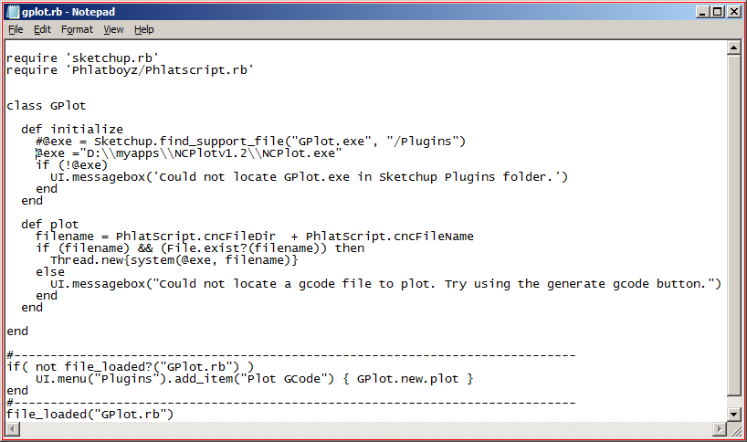

Phlatboyz PhlatScripT
SketchUcam Version 1.4
Oct 2015
Oct 2015
Back to help index

HOWTO change the default G-code plotter
SketchUcam is provided with the Gplot program to visualize the G-code that you have output from your drawing.
You can change the program to any G-code plotter that takes a filename as command line parameter, such as NCPlot. NCPlot will be used as an example here, replace references to NCPlot with your G-code plotter.
Follow these steps (new method, V1.4):
- Close Sketchup
- Find your NCPlot icon or menu entry, and right click it
- Select 'Properties'
- Under 'Target', select all the text as in image at right
- Press CTRL-C to copy it to the clipboard
 Open the Tools|PhlatBoyz|Options|File Options dialog pictured at right
Open the Tools|PhlatBoyz|Options|File Options dialog pictured at right
- paste the path to your Gcode previewer into the 'G-code Plotter Program' field, replacing the text 'default' entirely.
- Close the dialog.
- Now the program you have specified will open for all 'Plot Gcode' operations.
- Open the Tools|PhlatBoyz|Options|File Options dialog pictured above.
- Set the 'G-code Plotter Program' field to 'default'.
- Close the dialog.
Old Method
Do not use this unless you have a version of SketchUcam prior to V1.4. Once you upgrade to V1.4 you will need to follow the procedure above to set your previewer. Once set, future upgrades will no affect the setting.
- Close Sketchup
- Find your NCPlot icon or menu entry, and right click it
- Select 'Properties'
- Under 'Target', select all the text as in image at right
- Press CTRL-C to copy it to the clipboard
- Open the file 'gplot.rb' in the folder C:\Program Files\Google\Google SketchUp 8\Plugins
or C:\Program Files (x86)\Google\Google SketchUp 8\Plugins if you have 64bit Windows.
For Sketchup 2014 the path will be something like
C:\Users\username\AppData\Roaming\SketchUp\SketchUp 2014\SketchUp\Plugins
You need to open it in Notepad or a similar plain text editor. NOT MSWord! (to open Notepad, Start|All Programs|Accessories|Notepad)
 The file open in Notepad should appear as at right.
The file open in Notepad should appear as at right.
- In front of the line
@exe = Sketchup.find_support_file("GPlot.exe", "/Plugins")place a '#' like this#@exe = Sketchup.find_support_file("GPlot.exe", "/Plugins") - add a line below that one
- in the blank line type
@exe = ""
- now, between the "", paste the path to NCPLot.exe we copied to the clipboard earlier
@exe = "D:\myapps\NCPlotv1.2\NCPlot.exe"
- for each \ character in the path, add another one next to it like this
@exe = "D:\\myapps\\NCPlotv1.2\\NCPlot.exe"
-  Save the file, which should look as in the image at right
Now let us test Sketchup
- Open Sketchup,
- open a drawing for which you have created G-code,
- select Plugins|Plot G-code
- NCPlot should open with the existing G-code file